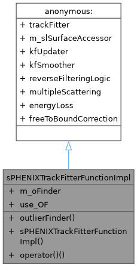
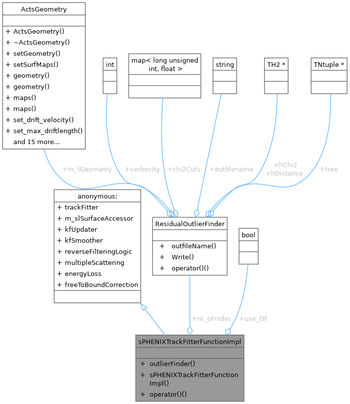
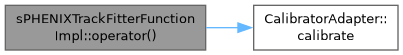

sPHENIXTrackFitterFunctionImpl Struct Reference
Inheritance diagram for sPHENIXTrackFitterFunctionImpl:

Collaboration diagram for sPHENIXTrackFitterFunctionImpl:

Public Member Functions | |
| void | outlierFinder (const ResidualOutlierFinder &finder) override |
| Set the residual outlier finder and activate its use. | |
| sPHENIXTrackFitterFunctionImpl (Fitter &&f, const Acts::TrackingGeometry &trkGeo) | |
| Construct sPHENIXTrackFitterFunctionImpl with a movable fitter and geometry. | |
| ActsTrackFittingAlgorithm::TrackFitterResult | operator() (const std::vector< Acts::SourceLink > &sourceLinks, const ActsTrackFittingAlgorithm::TrackParameters &initialParameters, const ActsTrackFittingAlgorithm::GeneralFitterOptions &options, const CalibratorAdapter &calibrator, ActsTrackFittingAlgorithm::TrackContainer &tracks) const override |
| Perform track fitting using Kalman filter with optional outlier finding. | |
Public Attributes | |
| ResidualOutlierFinder | m_oFinder |
| bool | use_OF = false |
Constructor & Destructor Documentation
◆ sPHENIXTrackFitterFunctionImpl()
|
inline |
Construct sPHENIXTrackFitterFunctionImpl with a movable fitter and geometry.
- Parameters
-
f Rvalue reference to a fitter object trkGeo Constant reference to tracking geometry used by the fitter This comment was generated by openai/gpt-oss-120b at temperature 0.1.
Member Function Documentation
◆ operator()()
|
inlineoverride |
Perform track fitting using Kalman filter with optional outlier finding.
- Parameters
-
sourceLinks Vector of source links representing detector hits initialParameters Initial track parameters for the fit options General fitter options controlling the fitting process calibrator Calibrator adapter used to apply calibrations during fitting tracks Container to store resulting fitted tracks
- Returns
- TrackFitterResult containing status and fit quality information This comment was generated by openai/gpt-oss-120b at temperature 0.1.
Here is the call graph for this function:

◆ outlierFinder()
|
inlineoverride |
Set the residual outlier finder and activate its use.
- Parameters
-
finder ResidualOutlierFinder instance used to identify outliers. This comment was generated by openai/gpt-oss-120b at temperature 0.1.
Member Data Documentation
◆ m_oFinder
| ResidualOutlierFinder sPHENIXTrackFitterFunctionImpl::m_oFinder |
◆ use_OF
| bool sPHENIXTrackFitterFunctionImpl::use_OF = false |
The documentation for this struct was generated from the following file:
- /home/atif/sphenix-celloai/coresoftware/offline/packages/trackbase/TrackFittingAlgorithmFunctionsKalman.cc
Generated by